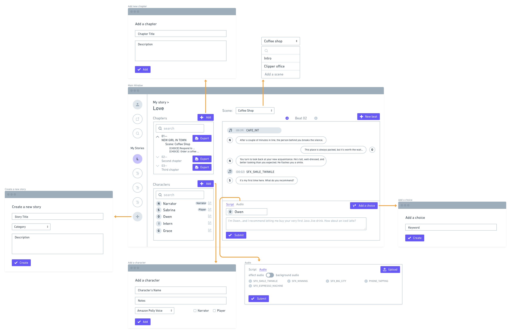

Demo > My Story >
Love
Chapters
Title
Overview
Save
Characters
+ Add
Name
Notes
Amazon Polly Voice
Emma, Female BRITISH
Sali, Female US
Narrator
Player
Neither
Save
Whole Process >
Demo Video
Whole Process >
Timeline (total 7h)
understand
user flow
wireframe
json structure
json file format
web frmame
html
css
javascript
Whole Process >
Userflow
Whole Process >
Json file
Whole Process >
Wireframe for Web
